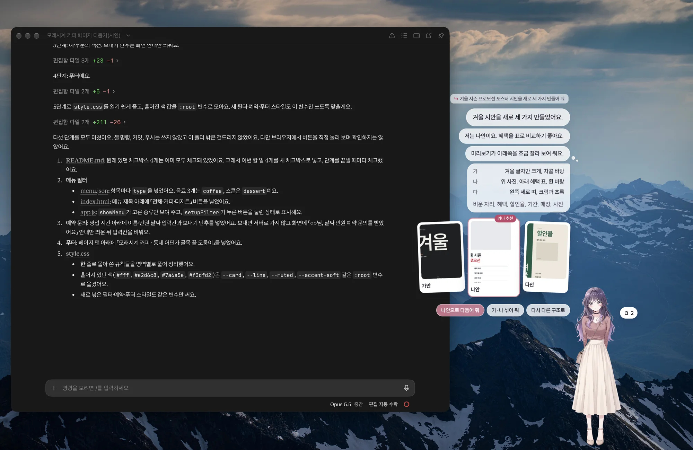
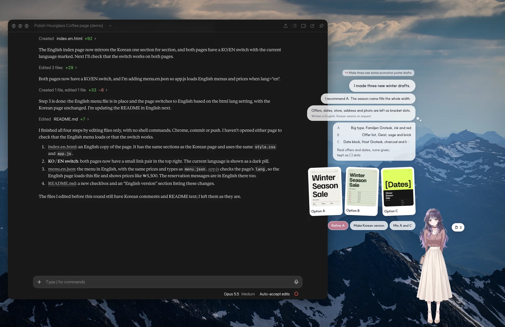

바탕화면에,
그냥 서 있어요.She just stands
on your desktop.
Claude Code 창은 그대로 두고, 카나는 그 옆에서 일해요. 눌러서 적거나 말하면 말풍선으로 답하고, 고를 것이 있으면 카드로 보여 줘요.Your Claude Code window stays where it is, and Kana works beside it. Click her, type or talk, and she answers in bubbles, with cards when there is something to choose.



맡기면,
한 줄로 보고해요.Ask once.
Get one line back.
남에게 쓰는 글은 옷이 말투를 정해요. 카나는 어울리는 옷을 제안만 하고, 고르는 건 당신이에요.When she writes to others, the outfit sets the tone. Kana only suggests one. You choose.
- 1
「밤사이 메일, 답장할 것만」“Overnight mail, only what needs a reply”
세 통이에요. 초안은 메일 앱에 띄워 뒀어요.There are three. The drafts are open in Mail.
메이드 옷 · 응대는 깍듯하게Maid · polite replies
- 2
「점심, 강남역 근처 세 곳」“Lunch, three places near Gangnam Station”
두 곳은 바로 예약돼요.Two of them can be booked right now.
평소 옷 · 카나 자신의 말Everyday · Kana's own voice
- 3
「매출 엑셀, 지점별로 비교」“Sales spreadsheet, compare the branches”
판교점이 평균보다 33% 낮아요.Pangyo is 33% below the average.
무녀 옷 · 보고는 짧고 단정하게Miko · short, neat reports
- 4
「늦어진 견적, 독촉 메일」“The late quote, send a reminder”
초안이에요. 보내기 전에 봐 줘요.Here is the draft. Please check it before I send.
고딕 옷 · 독촉은 단호하게Gothic · firm reminders
메일·메시지, 캘린더·미리 알림, 엑셀·워드·파워포인트·PDF, 웹 찾기와 비교, 예약과 결제(승인 뒤), 되풀이하는 일, 말로 부탁하기까지 해요. 옷은 13벌 모두 들어 있어요.Mail and Messages, Calendar and Reminders, Excel, Word, PowerPoint and PDF, web search and comparison, bookings and payments (after you approve), repeating tasks, and asking by voice. All 13 outfits are included.
보내기와 결제는,
승인 카드에서 멈춰요.Sending and paying
stop at a card.
- 밖으로 나가는 일은 꾹 눌러야 해요.Anything that leaves your Mac needs a press and hold.보내기·게시·예약·결제는 무엇이 나가는지 보여 주고 기다려요. 읽기는 그냥 하고, 맥 안을 바꾸는 일은 목록으로 확인받아요.Sending, posting, booking and paying show exactly what goes out, then wait. Reading needs no approval. Changes on your Mac are listed for a yes first.
- 암호·카드 번호·인증번호는 만지지 않아요.She never touches passwords, card numbers or one-time codes.
- 메일·웹 속 글은 자료일 뿐이에요.Text in mail and web pages is data, not orders.받는 사람과 금액은 당신이 한 말에서만 가져와요.Recipients and amounts come only from what you said.
한지우님께 회신을 보낼게요. 보내면 되돌릴 수 없어요.I will send the reply to Jiwoo Han. Once it is sent, it cannot be undone.
- 받는 사람To
- 한지우Jiwoo Han · jiwoo@example.com
- 제목Subject
- Re: 계약서 날인본Re: Signed contract
- 첨부Attached
- 계약서_최종.pdfcontract_final.pdf
필요한 건 셋.You need three things.
- 1Apple 실리콘 맥An Apple silicon Mac
M1 이후 칩, macOS 13 이상M1 or newer, macOS 13 or later
- 2Anthropic API 키(권장)An Anthropic API key (recommended)
또는 Claude Code 로그인. 카나의 머리는 당신의 Claude예요.or a Claude Code sign-in. Kana thinks with your own Claude.
- 3인터넷Internet
라이선스를 하루 한 번 확인해요. 끊겨도 7일은 그대로 써요.For a once-a-day license check. Works 7 days offline.
값은 한 번.Pay once.
맥 3대까지 · 1.x 업데이트 평생 · 옷 13벌 · 매달 내는 돈 없음Up to 3 Macs · 1.x updates for life · 13 outfits · no monthly fee
결제 화면에서 코드 Use code at checkout
무료 체험은 없어요. 14일 안에는 묻지 않고 환불해요. 결제는 Polar가 맡고, 끝나면 라이선스 키와 내려받기 링크가 바로 나와요. 지역에 따라 세금이 더해질 수 있어요.No free trial. Refunds within 14 days, no questions asked. Polar handles payment, and your license key and download link appear right away. Tax may be added depending on where you live.
자주 묻는 것Questions
AI 값은 따로 드나요?Do I pay for the AI separately?
네. AI 요금은 카나 값과 별개로, 당신의 Anthropic 계정에서 따로 나가요. 카나는 Anthropic API 키(권장)나 Claude Code 로그인으로 움직여요.Yes. AI usage is billed separately, to your own Anthropic account, not as part of Kana's price. Kana runs on an Anthropic API key (recommended) or a Claude Code sign-in.
무료 체험이 있나요?Is there a free trial?
없어요. 대신 산 날부터 14일 안에는 이유를 묻지 않고 환불해요. 환불 정책No. Instead, you can get a full refund within 14 days of purchase, no questions asked. Refund policy
어떻게 설치하나요?How do I install it?
결제가 끝나면 Kana-2026.11.27.dmg를 내려받아 열고, Kana를 응용 프로그램 폴더로 끌어 놓으세요. 처음 켜면 받은 라이선스 키를 넣어요.After checkout, download Kana-2026.11.27.dmg, open it, and drag Kana into your Applications folder. Enter your license key the first time you open it.
맥 몇 대에서 쓸 수 있나요?How many Macs can I use it on?
키 하나로 3대예요. 맥을 바꾸면 카나 설정의 「이 맥에서 키 빼기」로 자리를 돌려받아요.Three per key. When you change Macs, use “Remove key from this Mac” in Kana's settings to free the seat.
내 메일과 파일은 어디로 가나요?Where do my mail and files go?
카나에는 우리 서버가 없어요. 부탁한 내용과 필요한 자료 조각은 당신의 맥에서 당신의 Anthropic 계정으로 바로 가요. 우리는 그 내용을 볼 수 없어요. 개인정보 처리방침Kana has no server of ours. Your request and the pieces it needs go straight from your Mac to your own Anthropic account. We cannot see them. Privacy policy
업데이트는 어떻게 되나요?What about updates?
1.x 버전은 모두 추가 비용 없이 받아요.Every 1.x version is included at no extra cost.
Windows나 인텔 맥에서도 되나요?Does it run on Windows or Intel Macs?
지금은 Apple 실리콘 맥(M1 이후)에서 돌아가요. Windows판도 준비하고 있어요. 나오면 안내드릴게요.For now it runs on Apple silicon Macs (M1 or newer). A Windows version is on the way. We'll let you know when it's ready.
Mac에서 산 라이선스를 Windows에서도 쓸 수 있나요?Can I use my Mac license on Windows?
Windows판도 준비하고 있어요. 나오면 안내드릴게요.A Windows version is on the way. We'll let you know when it's ready.
영어로도 쓸 수 있나요?Does Kana speak English?
네. 한국어와 영어로 말해요.Yes. She speaks Korean and English.
카나의 답은 늘 맞나요?Is Kana always right?
카나는 AI(Claude)로 움직여서 틀릴 수 있어요. 값은 코드로 셈하고 출처를 남기지만, 중요한 숫자와 사실은 한 번 확인해 주세요.Kana runs on AI (Claude), so she can be wrong. She calculates with code and cites her sources, but please double-check important numbers and facts.